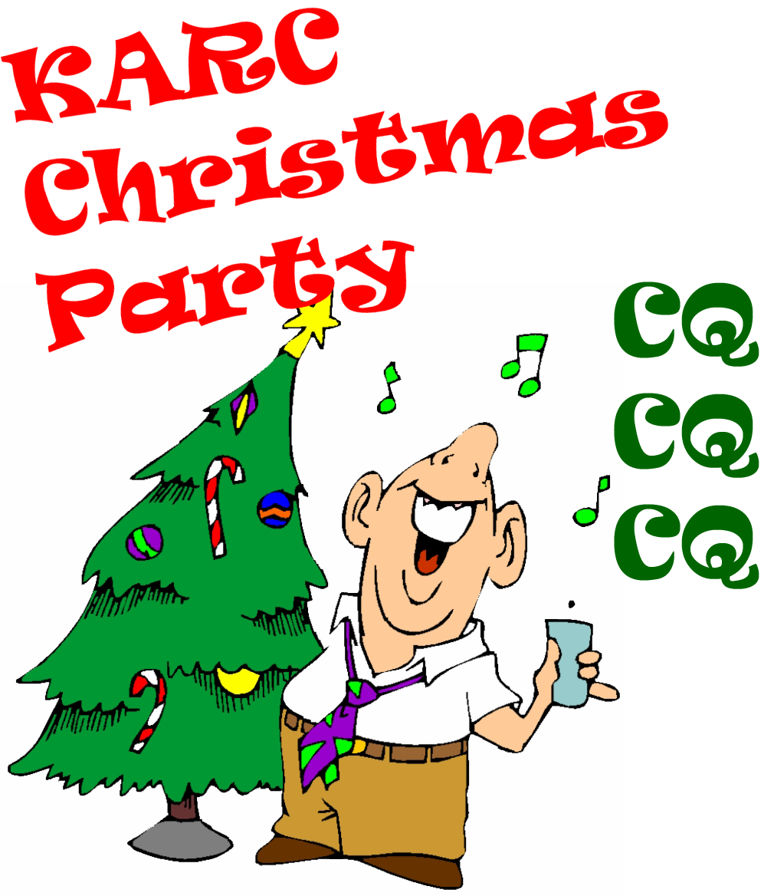

KARC Christmas Dinner 2022
Back to StoriesStory 723
Sun, 2022-12-18 12:57 — VE7FSR

20221215_KARC_Dinner_3.jpg The 2022 KARC Christmas Dinner was held on Thursday, December 15 at Kirsten's Hideout Cafe.
Kirsten and her husband prepared an amazing dinner and dessert, which was heartily enjoyed by KARC members and their YLs.
Thank you very much to Ralph Adams, VA7VZA, for organizing the evening for the club.
The evening began with some informal socializing, followed by a quick trivia contest organized and delivered by Ralph, VA7VZA and Myles, VE7FSR.
The successful contestants (winners!) were rewarded for their generous knowledge of useless trivia with gift cards from Tim Horton's, Starbucks, Princess Auto and the Dollarama Store.
Attending the dinner were: Ralph, VA7VZA and Rita; Shawn VA7NIN and Tamara; Simon VE7RIZ and Caitlin; Dave VE7LTW and Jane; Peter VE7DNZ and Sharon; Morgan VA7SOY and Rai; Pete VE7CV; Stuart VE7OMT; Jordan VE7OSX; Gerry VE7TGV and Erika; Bill VE7EAF and Susan; Vern VE7VGO and Elisabeth; and Myles VE7FSR.
20221215_KARC_Dinner_1_0.jpg 20221215_KARC_Dinner_2.jpg 20221215_KARC_Dinner_4.jpg 20221215_KARC_Dinner_5.jpg 20221215_KARC_Dinner_7.jpg KARC Christmas Breakfast_0.jpg After dessert was served the Club recognized a number of our members with Certificates of Appreciation for their volunteering and donations.
Receiving the 2022 KARC Certificate of Appreciation were: Shawn, VA7NIN Certificate 2022.jpg Simon, VE7RIZ Dave, VE7LTW Peter, VE7DNZ Jordan, VE7OSX Ralph, VA7VZA Lee, VE7FET Ian, VE7HHS Brian, VE7EIZ Adam, VA7AQD Chuck, VE7PJR Doug, VA7GPX Brock, VA7AV Mark, VE7ARN Dwight, VE7BV Thank you to all of the members who helped (in many ways!) over the past year.
We sincerely appreciate your hours of volunteer time, cash and in-kind donations to the club.
Best wishes for a peaceful holiday season -- Merry Christmas, and have a Happy New Year!